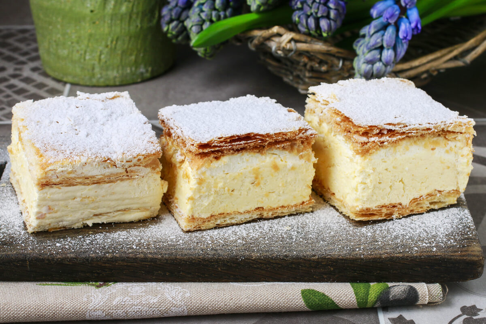

<mat-tab-group>
  <mat-tab label="1.kép"></mat-tab>
  <mat-tab label="2.kép"> </mat-tab>
  <mat-tab label="3.kép"> </mat-tab>
</mat-tab-group>
<mat-progress-bar mode="indeterminate"></mat-progress-bar>
<mat-toolbar>
  <button mat-icon-button class="example-icon" aria-label="Example icon-button with menu icon">

  </button>

  <span>{{title}}</span>
  <section>
    <div class="example-button-row">
      <a class="nav-link" routerLinkActive="active" routerLink="/homepage"><button mat-button color="primary">Home</button></a>
      <a class="nav-link" routerLinkActive="active" routerLink="/kosar"><button mat-button color="primary">Kosár</button></a>
      <a class="nav-link" routerLinkActive="active" routerLink="/profil"><button mat-button color="primary">Profil</button></a>
      <a class="nav-link" routerLinkActive="active" routerLink="/rendelesek"><button mat-button color="primary">Rendelések</button></a>
      <a class="nav-link" routerLinkActive="active" routerLink="/termekek"><button mat-button color="primary">Termékek</button></a>
      <a class="nav-link" routerLinkActive="active" routerLink="/info"><button mat-button color="primary">INFO</button></a>
      <a class="nav-link" routerLinkActive="active" routerLink="/login"><button mat-button color="primary">Login</button></a>
      <a class="nav-link" routerLinkActive="active" routerLink="/reg"><button mat-button color="primary">reg</button></a>
    </div>
  </section>
</mat-toolbar>
<mat-progress-bar mode="indeterminate"></mat-progress-bar>
<router-outlet></router-outlet>
